compute-words
文本框字数统计
使用方法案例:
30
<div class="txt-count-container">
<div class="counter"><em>30</em></div>
<textarea name="txt" id="txt" cols="30" rows="10" class="txt">万色城是一个创业平台，所有万色城的网商通过加盟，注册一个属于自己的网上商城。推广自己的商城，销售商城的商品创造收益。每个网商拥有一个属于自己的独立域名。万色城是国内唯一全部实行“实名制”的网上商城，每一个网商，以自己真实的姓名、照片和信誉，作为诚信经营的保障。</textarea>
</div>
<p><input type="button" value="点击提交" class="click"></p>
<script type="text/javascript" src="../src/zepto.js"></script>
<script type="text/javascript" src="../src/word-count.js"></script>
<script>
$(function() {
$(".click").click(function(){
if(!$('.txt').data('overflow') ){
alert('ok')
}
});
$('.txt').WordCount({
max:200,
isOverflowCut: false,
overClass:"over-number",
num:$(" .counter em"),
withButton:".click",
minHeight:100,
overflowCallback: function() {
//this.textBox.addClass('over-number');
//$(".counter em").addClass('over-number');
},
changeCallback: function(num) {
//var n = this.max - num;
//$(" .counter em").html(n);
},
passClallback: function() {
//this.textBox.removeClass('over-number');
//$(".counter em").removeClass('over-number');
},
isByte: true//字节
});
});
</script>
或者:
var wc = new WordCount();
wc .init({
trigger:$('.txt'),
max:200,
isOverflowCut: false,
overClass:"over-number",
num:$(" .counter em"),
withButton:".click",
minHeight:100,
overflowCallback: function() {
//this.textBox.addClass('over-number');
//$(".counter em").addClass('over-number');
},
changeCallback: function(num) {
//var n = this.max - num;
//$(" .counter em").html(n);
},
passClallback: function() {
//this.textBox.removeClass('over-number');
//$(".counter em").removeClass('over-number');
},
isByte: true//字节
});
属性和方法
trigger :string || object
触发的文本框
max :number
最大长度,如果不传会去取文本框的maxlength
isOverflowCut :boollen
是否自动截取文本
overClass :string
超出文本时的样式,会同时在num上和textbox上添加
num :element
显示计数的结点
minHeight: number
文本框的最小高度，因为这里做自适应高度的控制。如没有此参数时，不自适应高度。
withButton: element
关联按钮
isByte: boollen
是否按字节数来计算，true时：一个汉字作2个单位长度，false时汉字英文不作区分
方法回调:
overflowCallback:function(n,textbox,max)
超出时的回调，this指向当前对象,n为长度,textbox是文本框结点对象,max为最大长度
changeCallback:function(n,textbox,max)
长度改变时的回调,n为长度,textbox是文本框结点对象,max为最大长度
passClallback:function(n,textbox,max)
长度通过时的回调,n为长度,textbox是文本框结点对象,max为最大长度
其它组件推荐
- 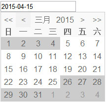 日历、日期、calendar Code Demo & API
- 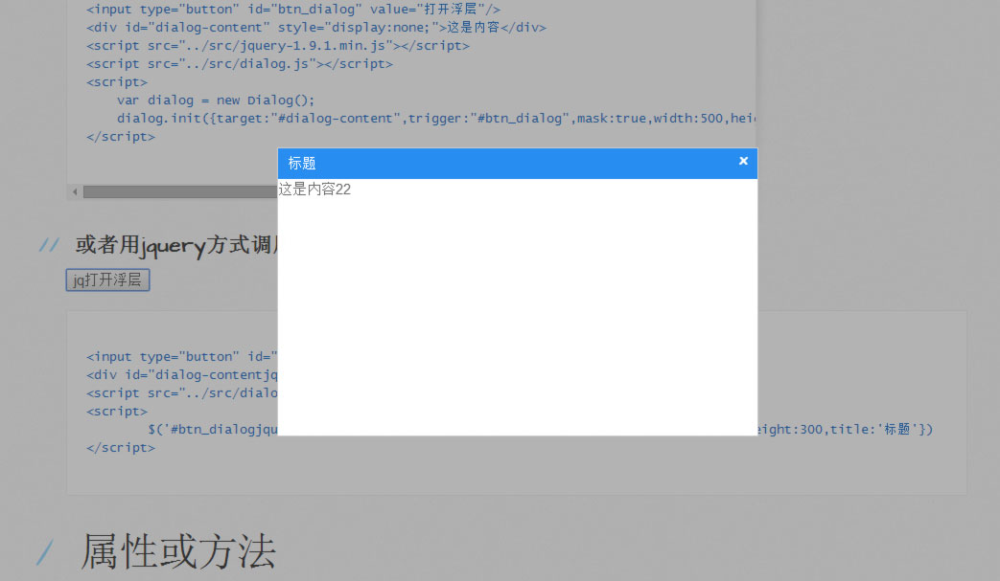 浮层、弹窗、dialog Code Demo & API
- 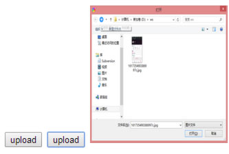 h5上传图片、upload Code Demo & API
- js的滚动加载内容 Code Demo & API
- 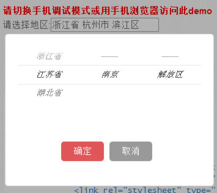 js手机选择地区联动仿ios Code Demo & API
- 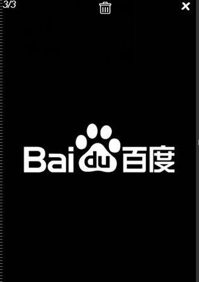 js实现手机端图片预览 Code Demo & API
- 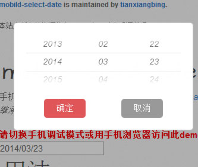 js实现手机端选择日期 Code Demo & API
- 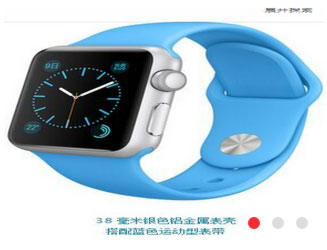 轮播图片、支持手机滑动 Code Demo & API
- 仿ajax上传文件iframe Code Demo & API
- 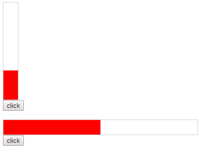 点击的进度条 Code Demo & API
- 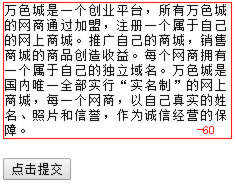 文本框计数统计 Code Demo & API
- 图片的懒加载 Code Demo & API
- 图片放大镜 Code Demo & API
-
 ajax分页插件paging
Code
Demo & API
ajax分页插件paging
Code
Demo & API
- 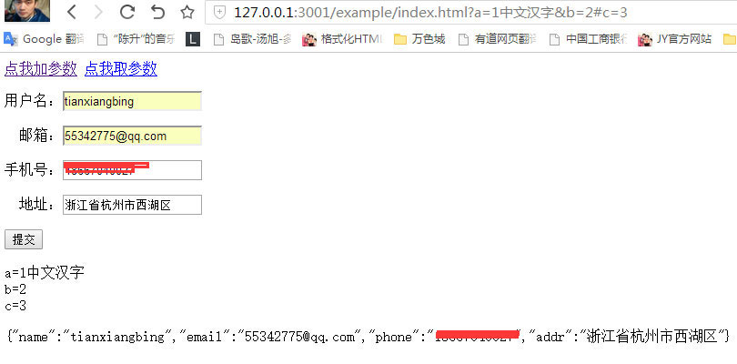 url参数和表单json参数 Code Demo & API
- 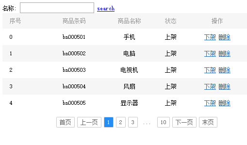 table表格组件 Code Demo & API
- 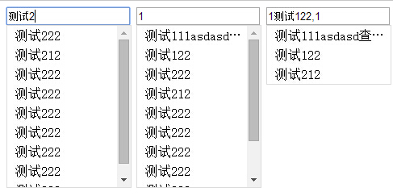 自动搜索提示autosearch Code Demo & API
- 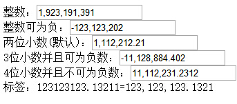 数字格式化千分位 Code Demo & API
- 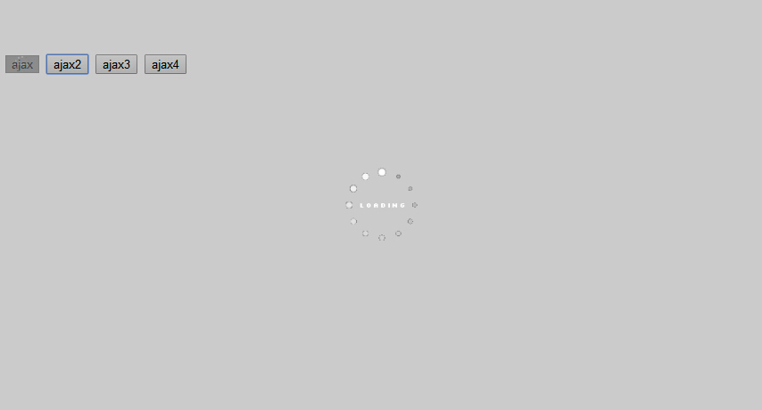 ajax的扩展network Code Demo & API
- 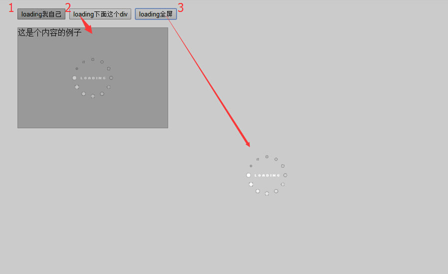 loading加载效果 Code Demo & API